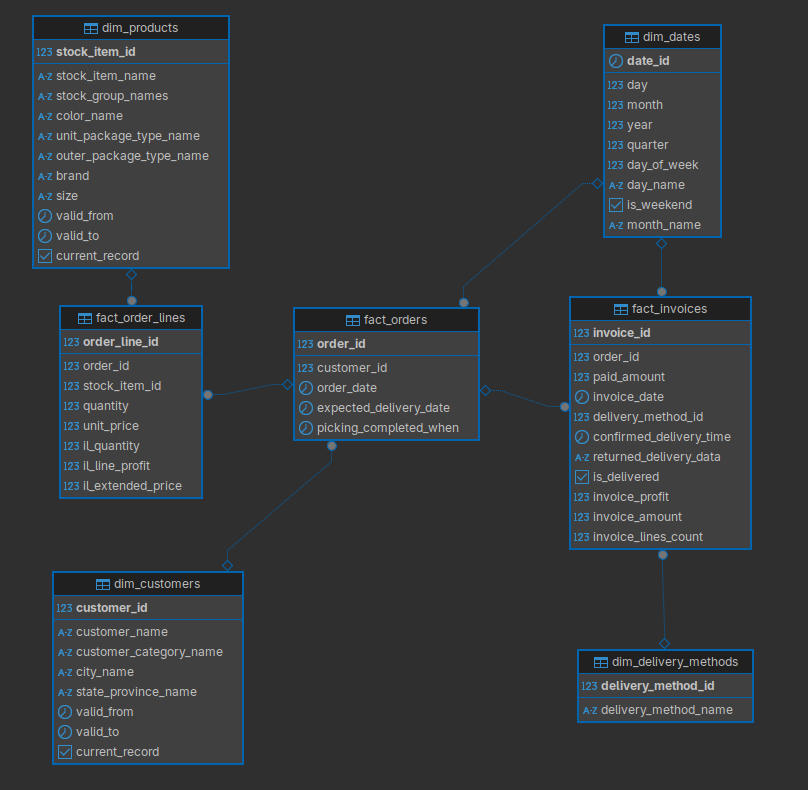

Designing the Analytical Database#
Database Schema Selection#
Let’s create an analytical database wwi_analytics for the dashboard.
To do this, we will transform the OLTP (current structure) to OLAP.
We will use a star schema as it is optimally suited for analytical databases.
Let’s switch to the analytical database.
con('dst')
Connected to dst
Let’s create a new schema where we will create the tables.
%%sql
CREATE SCHEMA analytics;
Install the dblink extension for communication between databases.
%%sql
CREATE EXTENSION IF NOT EXISTS dblink;
Form the connection string for dblink.
dblink_conn_str = f"""
host={src_db_config['host']}
dbname={src_db_config['db']}
user={src_db_config['user']}
password={src_db_config['pwd']}
port={src_db_config['port']}
"""
Dimension Tables#
Customers#
Create a dimension table for customers.
with wwi_analytics_engine.connect() as conn:
stmt = text(f"""
CREATE TABLE analytics.dim_customers AS
SELECT * FROM dblink(
'{dblink_conn_str}'
, 'SELECT
c.customer_id
, c.customer_name
, cc.customer_category_name
, ci.city_name
, sp.state_province_name
, CURRENT_DATE AS valid_from
, NULL::DATE AS valid_to
, TRUE AS current_record
FROM
sales.customers c
LEFT JOIN sales.customer_categories cc ON c.customer_category_id = cc.customer_category_id
LEFT JOIN application.cities ci ON c.delivery_city_id = ci.city_id
LEFT JOIN application.state_provinces sp ON ci.state_province_id = sp.state_province_id'
) AS t(
customer_id INT
, customer_name TEXT
, customer_category_name TEXT
, city_name TEXT
, state_province_name TEXT
, valid_from DATE
, valid_to DATE
, current_record BOOLEAN
);
ALTER TABLE analytics.dim_customers ADD PRIMARY KEY (customer_id);
""")
conn.execute(stmt)
conn.commit()
Products#
Create a dimension table for products.
with wwi_analytics_engine.connect() as conn:
stmt = text(f"""
CREATE TABLE analytics.dim_products AS
SELECT * FROM dblink(
'{dblink_conn_str}'
, 'WITH stock_groups_agg AS (
SELECT
sisg.stock_item_id
, STRING_AGG(sg.stock_group_name, '', '') AS stock_group_names
FROM
warehouse.stock_item_stock_groups sisg
LEFT JOIN warehouse.stock_groups sg ON sisg.stock_group_id = sg.stock_group_id
GROUP BY
sisg.stock_item_id
)
SELECT
si.stock_item_id
, si.stock_item_name
, sg.stock_group_names
, c.color_name
, ptu.package_type_name AS unit_package_type_name
, pto.package_type_name AS outer_package_type_name
, si.brand
, si.size
, CURRENT_DATE AS valid_from
, NULL::DATE AS valid_to
, TRUE AS current_record
FROM
warehouse.stock_items si
LEFT JOIN stock_groups_agg sg ON si.stock_item_id = sg.stock_item_id
LEFT JOIN warehouse.package_types ptu ON si.unit_package_id = ptu.package_type_id
LEFT JOIN warehouse.package_types pto ON si.outer_package_id = pto.package_type_id
LEFT JOIN warehouse.colors c ON c.color_id = si.color_id'
) AS t(
stock_item_id INT
, stock_item_name TEXT
, stock_group_names TEXT
, color_name TEXT
, unit_package_type_name TEXT
, outer_package_type_name TEXT
, brand TEXT
, size TEXT
, valid_from DATE
, valid_to DATE
, current_record BOOLEAN
);
ALTER TABLE analytics.dim_products ADD PRIMARY KEY (stock_item_id)
""")
conn.execute(stmt)
conn.commit()
Dates#
Create a dimension table for dates.
Select a range from 1 year before the minimum date in the database to 1 year after the maximum date in the database.
with wwi_analytics_engine.connect() as conn:
stmt = text(f"""
CREATE TABLE analytics.dim_dates AS
SELECT * FROM dblink(
'{dblink_conn_str}'
, 'WITH date_range AS (
SELECT
MIN(order_date) AS min_date
, MAX(confirmed_delivery_time::DATE) AS max_date
FROM
sales.orders o
JOIN
sales.invoices i ON o.order_id = i.order_id
)
SELECT
date_series::DATE AS date_id
, EXTRACT(DAY FROM date_series)::INT AS day
, EXTRACT(MONTH FROM date_series)::INT AS month
, EXTRACT(YEAR FROM date_series)::INT AS year
, EXTRACT(QUARTER FROM date_series)::INT AS quarter
, EXTRACT(DOW FROM date_series)::INT + 1 AS day_of_week
, TO_CHAR(date_series, ''Day'') AS day_name
, EXTRACT(DOW FROM date_series) IN (0, 6) AS is_weekend
, TO_CHAR(date_series, ''Month'') AS month_name
FROM
GENERATE_SERIES(
(SELECT min_date - INTERVAL ''1 year'' FROM date_range)
, (SELECT max_date + INTERVAL ''1 year'' FROM date_range)
, ''1 day''
) AS date_series;'
) AS t(
date_id DATE
, day INT
, month INT
, year INT
, quarter INT
, day_of_week INT
, day_name TEXT
, is_weekend BOOLEAN
, month_name TEXT
);
ALTER TABLE analytics.dim_dates ADD PRIMARY KEY (date_id)
""")
conn.execute(stmt)
conn.commit()
Delivery Methods#
Create a dimension table for delivery methods.
with wwi_analytics_engine.connect() as conn:
stmt = text(f"""
CREATE TABLE analytics.dim_delivery_methods AS
SELECT * FROM dblink(
'{dblink_conn_str}'
, 'SELECT
delivery_method_id
, delivery_method_name
FROM
application.delivery_methods'
) AS t(
delivery_method_id INT
, delivery_method_name TEXT
);
ALTER TABLE analytics.dim_delivery_methods ADD PRIMARY KEY (delivery_method_id)
""")
conn.execute(stmt)
conn.commit()
Fact Tables#
Orders#
Create a fact table for orders.
with wwi_analytics_engine.connect() as conn:
stmt = text(f"""
CREATE TABLE analytics.fact_orders AS
SELECT * FROM dblink(
'{dblink_conn_str}'
, 'SELECT
order_id
, customer_id
, order_date
, expected_delivery_date
, picking_completed_when
FROM
sales.orders'
) AS t(
order_id INT
, customer_id INT
, order_date DATE
, expected_delivery_date DATE
, picking_completed_when TIMESTAMP
);
ALTER TABLE analytics.fact_orders ADD PRIMARY KEY (order_id);
ALTER TABLE analytics.fact_orders ADD CONSTRAINT fk_orders_customer
FOREIGN KEY (customer_id) REFERENCES analytics.dim_customers(customer_id);
ALTER TABLE analytics.fact_orders ADD CONSTRAINT fk_orders_date
FOREIGN KEY (order_date) REFERENCES analytics.dim_dates(date_id);
CREATE INDEX idx_fact_orders_customer ON analytics.fact_orders(customer_id);
CREATE INDEX idx_fact_orders_date ON analytics.fact_orders(order_date);
""")
conn.execute(stmt)
conn.commit()
Invoices#
Create a fact table for invoices.
with wwi_analytics_engine.connect() as conn:
stmt = text(f"""
CREATE TABLE analytics.fact_invoices AS
SELECT * FROM dblink(
'{dblink_conn_str}'
, 'WITH invoice_totals AS (
SELECT
i.invoice_id
, SUM(il.line_profit) AS invoice_profit
, SUM(il.extended_price) AS invoice_amount
, COUNT(il.invoice_line_id) AS invoice_lines_count
FROM
sales.invoices i
LEFT JOIN sales.invoice_lines il ON i.invoice_id = il.invoice_id
GROUP BY
i.invoice_id
),
payment_totals AS (
SELECT
invoice_id
, SUM(transaction_amount) AS paid_amount
FROM
sales.customer_transactions
where
is_finalized = TRUE
GROUP BY
invoice_id
)
SELECT
i.invoice_id
, i.order_id
, pt.paid_amount
, i.invoice_date
, i.delivery_method_id
, i.confirmed_delivery_time
, i.returned_delivery_data
, CASE WHEN i.confirmed_delivery_time IS NOT NULL THEN TRUE ELSE FALSE END AS is_delivered
, it.invoice_profit
, it.invoice_amount
, it.invoice_lines_count
FROM
sales.invoices i
LEFT JOIN invoice_totals it ON i.invoice_id = it.invoice_id
LEFT JOIN payment_totals pt ON it.invoice_id = pt.invoice_id;'
) AS t(
invoice_id INT
, order_id INT
, paid_amount NUMERIC
, invoice_date DATE
, delivery_method_id INT
, confirmed_delivery_time TIMESTAMP
, returned_delivery_data TEXT
, is_delivered BOOLEAN
, invoice_profit NUMERIC
, invoice_amount NUMERIC
, invoice_lines_count INT
);
ALTER TABLE analytics.fact_invoices ADD PRIMARY KEY (invoice_id);
ALTER TABLE analytics.fact_invoices ADD CONSTRAINT fk_invoices_order
FOREIGN KEY (order_id) REFERENCES analytics.fact_orders(order_id);
ALTER TABLE analytics.fact_invoices ADD CONSTRAINT fk_invoice_delivery
FOREIGN KEY (delivery_method_id) REFERENCES analytics.dim_delivery_methods(delivery_method_id);
ALTER TABLE analytics.fact_invoices ADD CONSTRAINT fk_invoices_date
FOREIGN KEY (invoice_date) REFERENCES analytics.dim_dates(date_id);
CREATE INDEX idx_fact_invoices_order ON analytics.fact_invoices(order_id);
CREATE INDEX idx_fact_invoices_date ON analytics.fact_invoices(invoice_date);
CREATE INDEX idx_fact_invoices_delivery_status ON analytics.fact_invoices(is_delivered);
CREATE INDEX idx_fact_invoices_delivery_method ON analytics.fact_invoices(delivery_method_id);
""")
conn.execute(stmt)
conn.commit()
Order Lines#
Create a fact table for order lines.
with wwi_analytics_engine.connect() as conn:
stmt = text(f"""
CREATE TABLE analytics.fact_order_lines AS
SELECT * FROM dblink(
'{dblink_conn_str}'
, 'SELECT
ol.order_line_id
, o.order_id
, ol.stock_item_id
, ol.quantity
, ol.unit_price
, il.quantity AS il_quantity
, il.line_profit AS il_line_profit
, il.extended_price AS il_extended_price
FROM
sales.orders o
LEFT JOIN sales.order_lines ol ON o.order_id = ol.order_id
LEFT JOIN sales.invoices i ON i.order_id = o.order_id
LEFT JOIN sales.invoice_lines il ON i.invoice_id = il.invoice_id AND ol.stock_item_id = il.stock_item_id'
) AS t(
order_line_id INT
, order_id INT
, stock_item_id INT
, quantity INT
, unit_price NUMERIC
, il_quantity INT
, il_line_profit NUMERIC
, il_extended_price NUMERIC
);
ALTER TABLE analytics.fact_order_lines ADD PRIMARY KEY (order_line_id);
ALTER TABLE analytics.fact_order_lines ADD CONSTRAINT fk_orderlines_order
FOREIGN KEY (order_id) REFERENCES analytics.fact_orders(order_id);
ALTER TABLE analytics.fact_order_lines ADD CONSTRAINT fk_orderlines_product
FOREIGN KEY (stock_item_id) REFERENCES analytics.dim_products(stock_item_id);
CREATE INDEX idx_fact_order_lines_product ON analytics.fact_order_lines(stock_item_id);
CREATE INDEX idx_fact_order_lines_order ON analytics.fact_order_lines(order_id);
CREATE INDEX idx_fact_order_lines_profit ON analytics.fact_order_lines(il_line_profit);
CREATE INDEX idx_fact_order_extended_price ON analytics.fact_order_lines(il_extended_price);
""")
conn.execute(stmt)
conn.commit()
Update database statistics to ensure optimal query performance.
%%sql
ANALYZE analytics.dim_customers;
ANALYZE analytics.dim_products;
ANALYZE analytics.dim_dates;
ANALYZE analytics.dim_delivery_methods;
ANALYZE analytics.fact_orders;
ANALYZE analytics.fact_invoices;
ANALYZE analytics.fact_order_lines;
As a result, we obtained the following schema.
